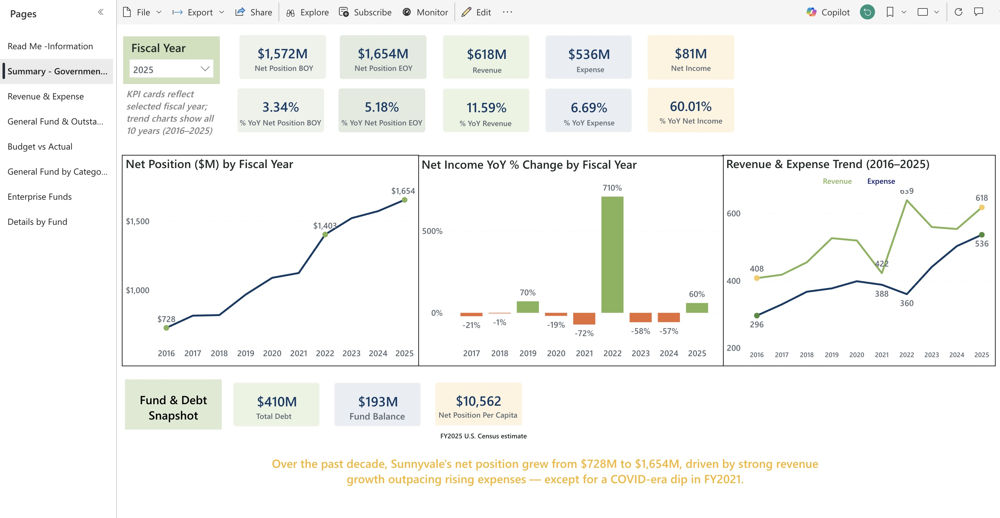
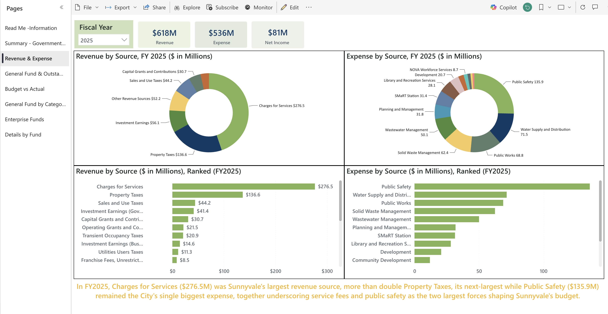
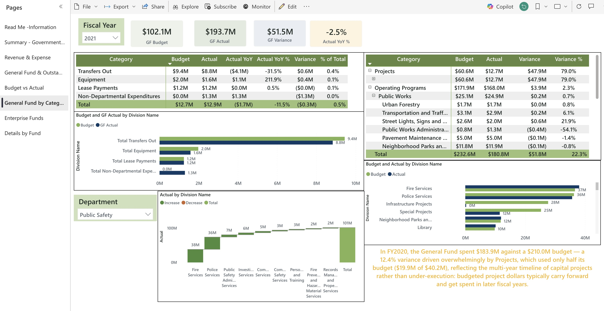
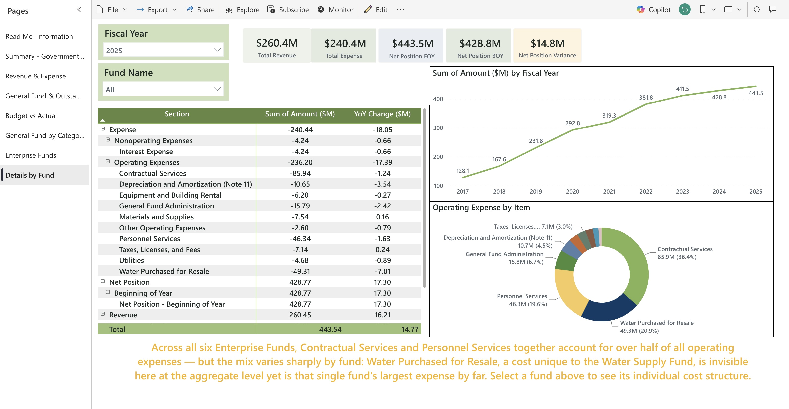

Chapter 2 · Understanding Cities Through Data
Understanding Cities Through Data
CompassPoint Mentorship Program · 2026
Question: Can better visualization change the questions people ask?
Question 04
Through the CompassPoint Mentorship Program, I explored how AI can help compare municipal financial systems that were never designed to be compared.
The Challenge
Each city's financial report runs hundreds of pages, and no two define their categories the same way. My first version was a PowerPoint that could only answer questions I'd already asked. The real engineering challenge wasn't building the dashboard. It was going city by city, deciding what was actually comparable, and building a framework that allowed meaningful comparisons across different accounting systems.
"The dashboard wasn't the breakthrough. Building a common language across different cities was."
View Original Analysis (PDF)
Process


Before · Original ACFR ReportAfter · Interactive Dashboard
300+ Page ACFR → Reconcile City Terminology → Normalize Accounting Structures → Build Common Framework → Validate with AI → Compare Cities → Power BI → Interactive Platform
01 · City Got Wealthier
$728M → $1,654M
+127% in 9 years
02 · Where Revenue Goes
Sources, Mix & Trends
Where it comes from, where it's spent
03 · What's Next
If Key Sources Change
Stress-testing four paths to FY2030
Impact
"We've never been able to explore the city's finances like this."
Comment from a Sunnyvale City Council member after the project presentation
Presented to the Sunnyvale City Council as part of an ongoing regional municipal analytics research project.
Only after trustworthy data is built can meaningful questions be asked. The biggest breakthrough wasn't learning a new software tool. It was realizing that meaningful comparisons begin long before visualization, with a trustworthy data foundation and a shared framework.
Four Growth Engines: Very Different Reliability
Property Tax
Reliable
+114% in 9 yrs. Slows only if Silicon Valley office vacancy rises substantially.
Development Fees
Volatile
$8M ↔ $73M swings. Disappears if the Fed cuts to 2%. Entirely cycle-dependent.
Investment Earnings
Temporary
Rate-dependent. A cut to 2% erases ~$35M/yr overnight. Not a permanent source.
Capital Grants
Lumpy
Project-by-project. FY2022's $71M spike was a one-time federal grant.
Hover to see each page's focus. Click to zoom in.
Government-Wide Summary

Revenue & Expense by Source

General Fund by Category

Outstanding Debt Trend